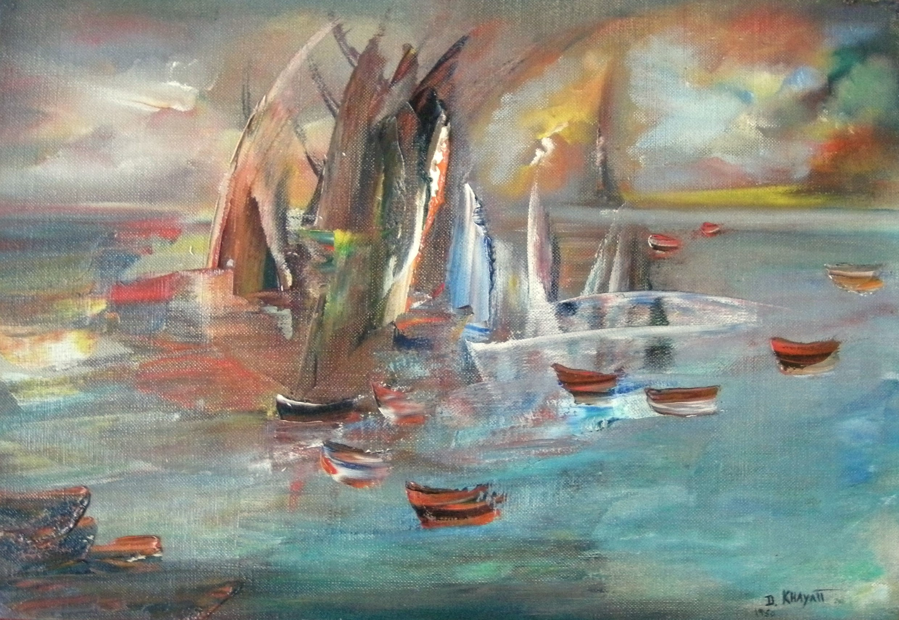

Dora Khayatt
1912–1986
Artist Biography
Dora Khayatt was born in Cairo into a family of Coptic Christians. She spent many Summers in Paris studying art but only took up painting seriously in 1948 at the age of 36. Her success, though, was immediate; in 1949 her work was selected for a British Council exhibition in Cairo ‘An Exhibition of Paintings by Six Egyptian Artists’ (the others included Mahmoud Said, Mohammed Naghi and Youssef Kamel) and the same year she had a near sell-out solo exhibition at the Redfern Gallery in London. The Redfern gave her another solo show in 1952, as did the Durand Ruel Gallery in Paris in 1956 and the Wildenstein Gallery in New York in 1960. Further major shows included the Museum of Art in Birmingham, Alabama in 1968 and the Union League of Philadelphia in 1976. Khayatt painted in an impressionistic style but using bold and vivid colours. Landscapes and boats were favourite topics. She spent time in England but after marriage to an American spent her later years in the United States. Her work is held in public collections by Leicestershire County Council Artwork Collection in the UK and Birmingham Museum of Art in the United States.

Untitled, 1950